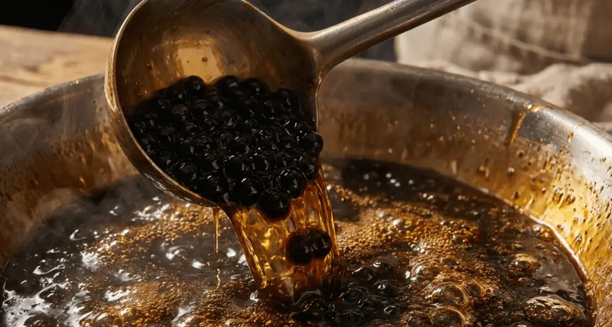
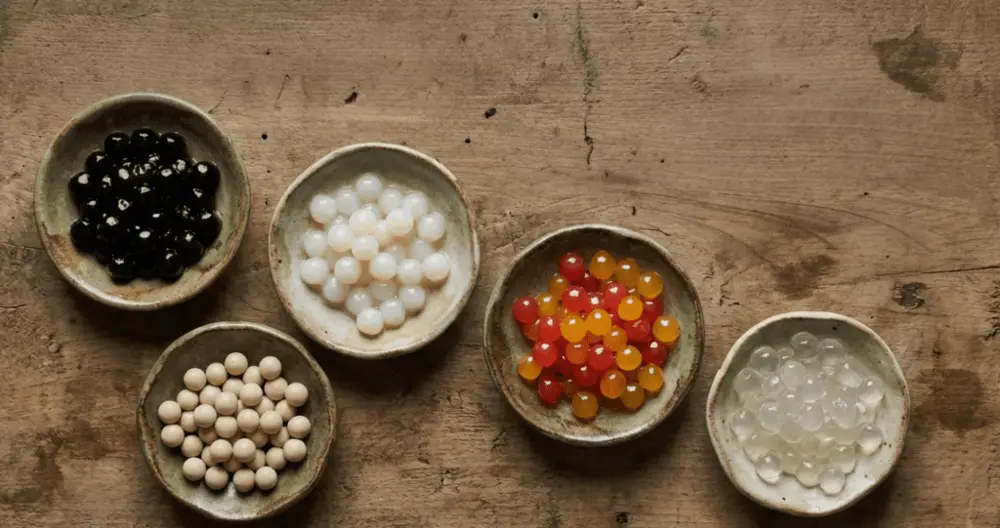
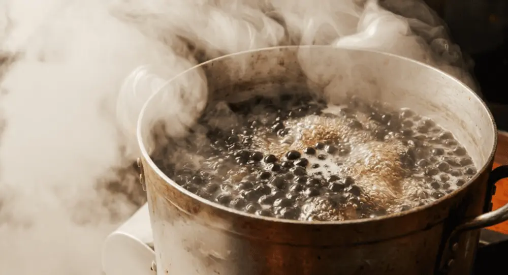
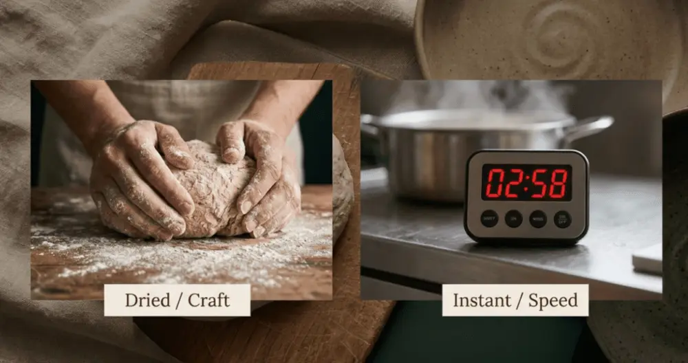

文章 / 飲品配方與資訊
Tapioca Pearls 101: Types, Cooking Tips, and How to Choose the Best Boba
這篇是英文原文，尚未完成繁體中文翻譯。中文選單與相關商品連結不會切回英文介面。

查看英文原文（尚未翻譯）
Tapioca pearls are chewy, marble-sized spheres made from cassava root starch, and they are the defining ingredient in bubble tea. The global tapioca pearls market reached USD 5,400M in 2024, with medium-sized pearls (5-8mm) accounting for 44.7% of sales, according to Future Market Insights. This guide covers the five main types of tapioca pearls, step-by-step cooking methods for perfect texture, and practical sourcing advice for boba shop owners.
What Are Tapioca Pearls Made Of?
Tapioca pearls start as cassava root starch mixed with boiling water to form a pliable dough, which is then cut and rolled into small spheres. The pearls themselves carry almost no flavor. Their purpose is textural: a soft-yet-springy chewiness that the Taiwanese call “Q” or “QQ,” a term describing a bouncy, resilient mouthfeel similar to the Italian concept of al dente.
Color and sweetness come from added ingredients. Classic black boba gets its dark hue from brown sugar or caramel coloring. White pearls use plain starch and water. This neutral flavor profile makes tapioca pearls highly adaptable. Manufacturers can customize them with matcha, taro, mango, strawberry, and dozens of other flavors by incorporating powders or purees into the dough.
Five Types of Tapioca Pearls and When to Use Each
Not all boba is created equal. The market offers five distinct categories, each with different ingredients, textures, and operational requirements:
| Type | Main Ingredients | Texture | Best For | Preparation |
|---|---|---|---|---|
| Black Tapioca Pearls | Cassava starch + brown sugar | Chewy, springy | Classic milk tea | Boil 20-30 min + rest |
| White Tapioca Pearls | Pure cassava starch + water | Softer, translucent | Asian desserts, puddings | Boil 20-30 min + rest |
| Instant Tapioca Pearls | Pre-processed cassava starch | Close to traditional | Quick-service shops | Microwave 3 min or brief boil |
| Popping Boba | Fruit juice + sodium alginate | Bursts when bitten | Fruit teas, yogurt toppings | Ready to use, no cooking |
| Crystal Boba | Konjac powder | Jelly-like, smooth | Low-calorie drinks | Ready to use, no cooking |
Black tapioca pearls dominate the bubble tea industry. The beverage segment captured 27% of the total tapioca pearl market share in 2025, driven by the global expansion of chains like Gong Cha and CoCo Fresh Tea & Juice. Popping boba is gaining ground in fruit tea applications, with some data suggesting it generates over twice the user-generated content on social media compared to traditional pearls.


How to Cook Tapioca Pearls: The Complete Method
Perfectly cooked boba depends on three variables: water ratio, cooking time, and post-cook handling. Here is a reliable method for standard dried black tapioca pearls.
Step 1: Use plenty of boiling water. The pearl-to-water ratio should be at least 1:6. Insufficient water causes uneven cooking, leaving a starchy center inside an overcooked exterior. Bring the water to a full rolling boil before adding pearls.
Step 2: Cook and rest. Sprinkle pearls into the water gradually, stirring gently to prevent clumping. Boil for 20-30 minutes, stirring occasionally. Turn off heat, cover the pot, and let pearls rest for 10-15 minutes. This resting phase allows starch gelatinization to complete evenly through each pearl. Quick-cook varieties (3-5 minute microwave types) should follow their package instructions.
Step 3: Rinse and soak in syrup. Drain pearls and rinse briefly under cold water to remove surface starch. Transfer immediately to prepared sugar syrup. Soak for 10-15 minutes. The syrup adds sweetness and prevents pearls from sticking together.
| Problem | Cause | Fix |
|---|---|---|
| Hard center, soft outside | Undercooked or too little water | Extend cooking + resting time |
| Mushy throughout | Overcooked or left in water too long | Reduce cook time, process immediately |
| Pearls clumping | Added too fast or not stirred | Add gradually, stir consistently |
| Hardening after cooling | Starch retrogradation | Keep in room-temp syrup, use within 4 hours |
Cooked tapioca pearls maintain optimal texture for roughly 4 hours at room temperature in sugar syrup. Refrigeration accelerates retrogradation, making pearls hard and unpleasant. For boba shops, cooking in small batches throughout the day yields far better results than preparing everything at once.


How to Choose the Right Boba Tea Supplier
For anyone planning how to start a bubble tea business, selecting the right boba tea supplier is one of the most consequential early decisions. The choice affects product quality, cost structure, and menu flexibility.
Taiwan remains the primary source for premium tapioca pearls. Taiwanese manufacturers have over four decades of R&D experience in boba texture engineering, and the country’s food safety framework requires compliance with HACCP, ISO 22000, and FSSC 22000 standards. Most Taiwanese suppliers also offer OEM/ODM services, allowing buyers to customize pearl size, flavor, color, and packaging under their own brand.
When evaluating wholesale bubble tea suppliers, consider these criteria:
| Factor | What to Look For |
|---|---|
| Product range | Full line (dried, instant, frozen, popping boba) |
| MOQ flexibility | Willingness to accommodate smaller trial orders |
| Certifications | HACCP, ISO 22000, FDA registration, EU compliance |
| Customization | OEM/ODM capability for private label |
| Sample policy | Free or low-cost samples before commitment |
| Lead time | Consistent production and shipping schedules |
Yen Chuan offers a complete range of tapioca pearls, from dried black pearls and frozen options to room-temperature instant pearls, backed by over 40 years of manufacturing expertise from Taiwan.
Dried vs. Instant Tapioca Pearls: A Cost-Benefit Breakdown
The choice between dried and instant pearls shapes daily operations. Dried pearls cost less per kilogram (roughly USD 2-4/kg) but require 20-30 minutes of active preparation plus trained staff. Instant pearls run USD 5-10/kg but can be ready in 3 minutes with a microwave, cutting labor costs and reducing inconsistency.
High-volume shops serving 200+ cups per day typically favor dried pearls for cost efficiency, investing in dedicated tapioca cookers that automate temperature and timing. Smaller operations, pop-ups, and delivery-focused concepts often find instant pearls more practical, accepting the higher ingredient cost in exchange for simplicity and speed.


Planning Your Bubble Tea Supply Chain
Tapioca pearls are just one piece of the supply chain puzzle. A complete boba tea supplies checklist for opening a shop includes tea leaves, syrups, powders, toppings (jelly, red bean, coconut), packaging (cups, lids, straws), and equipment (sealing machines, shakers, fructose dispensers).
Sourcing from a single supplier that covers the full ingredient and equipment range reduces logistics complexity and often unlocks better pricing. For bubble tea wholesale buyers, typical MOQs start at 500kg for tapioca pearls, 100kg for tea leaves, and 200kg for syrups. Many Taiwanese suppliers offer first-order discounts and flexible terms for new customers.
Sources
- Wikipedia – Tapioca Pearl
- Future Market Insights – Tapioca Pearls Market Size, Trends & Forecast 2025-2035
- Reanin – Tapioca Pearls Market Size & Industry Share
- Food and Agriculture Organization of the United Nations (FAO)
- U.S. Food and Drug Administration (FDA)
Frequently Asked Questions
MOQs vary by product type. Dried tapioca pearls typically start at 500kg, while instant pearls may be available from 200kg due to higher unit pricing. Most Taiwanese suppliers offer flexible first-order terms and sample shipments for new buyers.
Traditional tapioca pearls are made from cassava starch and have a chewy, springy texture. Popping boba uses fruit juice encapsulated through a spherification process with sodium alginate, creating balls that burst with juice when bitten. They require no cooking and pair well with fruit teas.
Cooked pearls maintain their ideal texture for about 4 hours in room-temperature sugar syrup. Starch retrogradation causes them to harden beyond that window. Refrigeration speeds up this process, so storing cooked boba in the fridge is not recommended.
Taiwan pioneered bubble tea in the 1980s, and its manufacturers lead in product innovation, including quick-cook, long-lasting, and custom-flavored pearls. Most Taiwanese suppliers hold ISO 22000, HACCP, and FSSC 22000 certifications, meeting FDA and EU import standards.
Essential equipment includes a large stock pot or dedicated tapioca cooker, a warming pot to maintain pearl texture during service, and syrup preparation tools. Shops serving over 150 cups daily should invest in automated tapioca cookers for consistent quality.
Author: Yen Chuan Marketing Team
The tapioca pearl category has fragmented rapidly over the past five years. On the consumer side, instant and ready-to-eat formats reflect a clear convenience premium. On the B2B side, the competitive edge is shifting from price to customization capability. Suppliers who can deliver tailored pearl sizes, proprietary flavors, and flexible shelf-life solutions are winning contracts over those competing purely on cost. For procurement teams evaluating partners, food safety depth and R&D responsiveness matter more than unit price alone.
Looking for a reliable tapioca pearl supplier with full OEM/ODM capabilities? Contact the Yen Chuan team to discuss product specifications, sampling, and wholesale pricing.